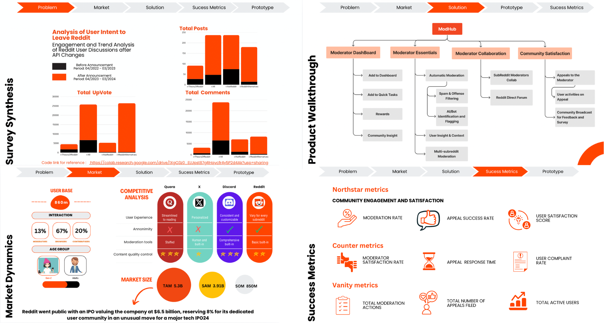
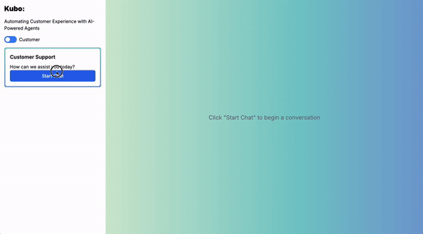
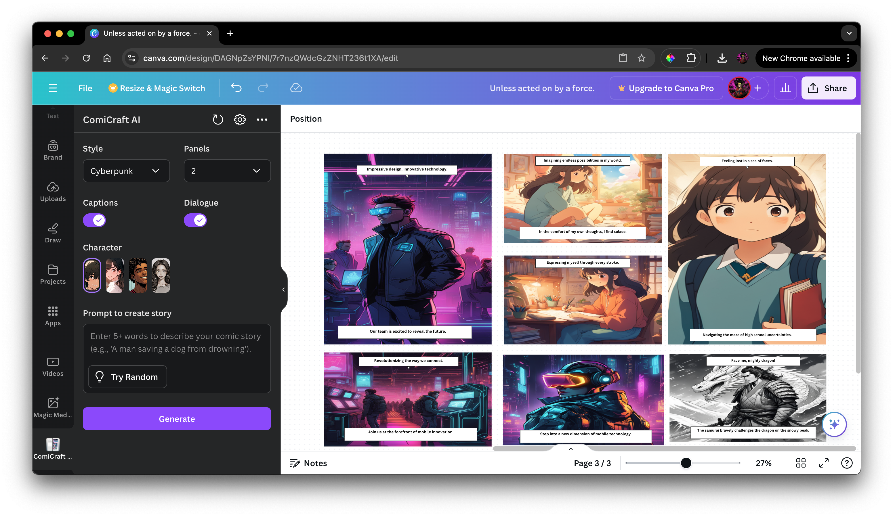
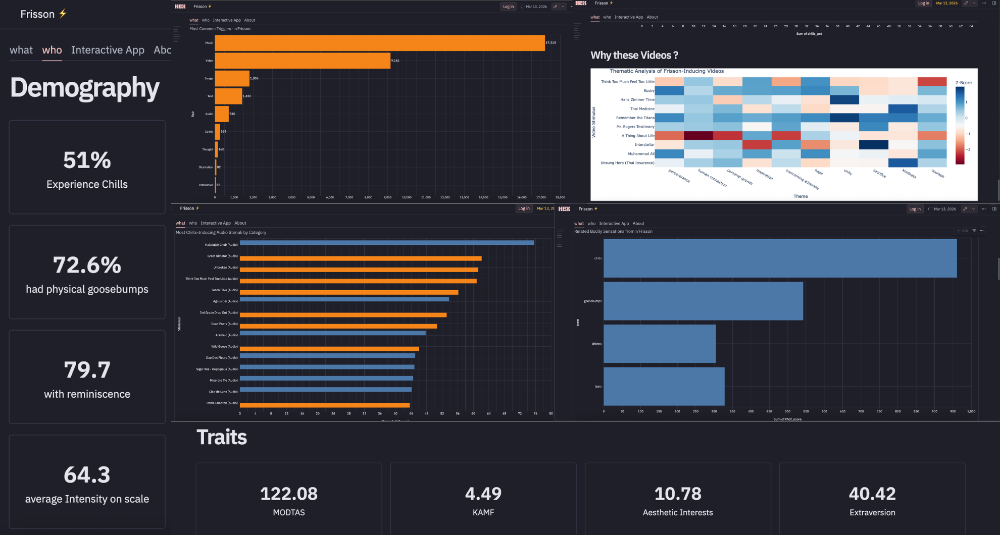
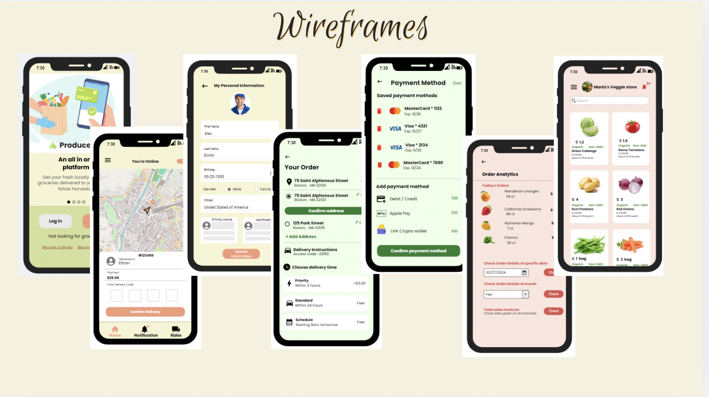
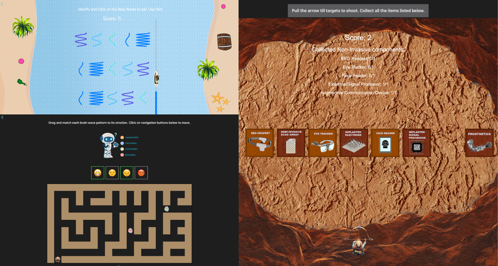

Reddit ModHub : Platform case study & Product Strategy

Overview
A product research and strategy project focused on improving user retention and trust within Reddit. The project explored how moderation power imbalances, censorship concerns, and changes to Reddit’s API pricing impacted user satisfaction and community reliability, especially during the 2023 Reddit blackout sparked by the shutdown of popular third-party apps like Apollo and RIF. The goal was to identify trust gaps within the platform and propose product-driven solutions that improve transparency, moderation accountability, and long-term community engagement.
Kubo AI : An Enterprise AI Product Discovery

Overview
A customizable Multi-model AI Avatar companion that could adapt to any role from personalized study buddy to customer support agent. Designed to provide real-time, interactive support through conversational video-based interactions. The system combines object recognition, contextual understanding, personalized recommendations, and a centralized knowledge base to deliver accurate and adaptive responses. It also includes admin controls for configuring AI behavior, managing resources, and monitoring performance through analytics dashboards and user insights.
ComiCraftAI : Gen AI Product Quality Management & Economic Viability

Overview
An AI-powered comic generation on Canva platform that transforms written stories into visually consistent comic strips. Users can customize comic styles, characters, panel layouts, captions, and dialogue while the system automatically generates illustrated scenes and narratives. The project focuses on making comic creation faster, consistent and more accessible without requiring artistic or design experience.
Frission : Product Analytics & Data-driven Decision

Overview
Turning subjective human experiences into product signals : An application for Frisson prediction by analyzing the relationship between content characteristics, emotional responses, and individual differences, that estimates an individual's likelihood of experiencing chills based on demographic and personality-related inputs. The goal is to explore a path from fragmented behavioral data to interpretable content signals and a potential personalization capability that helps improve content.
ProducePal- UI/UX Design & Experience Strategy

Overview
ProducePal is a UI/UX project designed to help local farmers connect directly with nearby consumers through a more transparent and accessible digital experience. The project was developed through a user-centered design process that involved identifying core user pain points, defining objectives, and researching consumer and farmer behaviors. By simplifying discovery and communication, the project aimed to expand farmer's market, strengthen customer relationships, create convenient and community-driven food ecosystem.
Neuro.Explorer - Creative Engineering & Game development

Overview
Neuro-Explorer: A BCI Odyssey is an educational game designed to introduce players to Brain-Computer Interface (BCI) technology through interactive storytelling and gameplay. Players explore how brainwaves can be used to assist individuals with disabilities by completing challenges focused on BCI concepts, component discovery, and pattern training for machine learning. The project blends learning with immersive gameplay to make complex concepts more engaging and accessible.